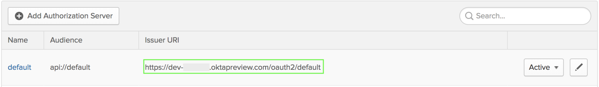
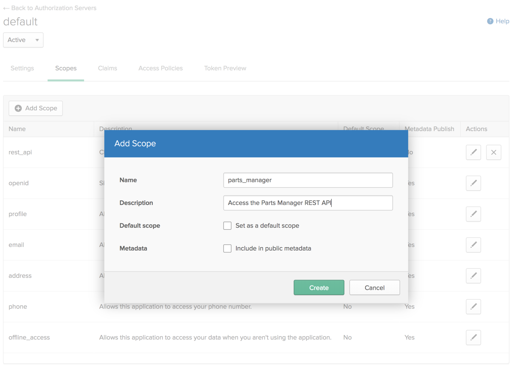

JavaScript 在网络上无处不在。基本上每个网页都或多或少包含一些 JavaScript 代码，即使没有，你的浏览器或许也装了一些拓展附件，这些拓展附件能够将一部分 JavaScript 代码注入网页中。2018 年依旧如此。
JavaScript 也可以在浏览器之外使用，从托管网络服务器到控制 RC 汽车或者运行一个成熟的操作系统。有些时候你想要两台服务器互相通信，无论是本地网络还是互联网上。
今天，我会向你展示怎样使用 node.js 创建一个 REST API，同时使用 OAuth2.0 维护它，以防止未经授权的请求。REST API 遍布整个网络，但是如果没有合适的工具那么就需要大量的模板代码。我会向你展示怎样使用两个神奇的工具，这两个工具能使工作更轻松，包括用 OKta 实现客户端凭证流（翻译“Client Credentials Flow”这个词组时自己认怂了，只好用百度翻译了 😂。），它能不使用用户上下文而将两台机器安全地连接在一起。
构建一个 REST 类型的 Node API 服务器 通过使用Express JavaScript library 能够让创建 Node 网络服务器更加简单。创建一个文件夹用来包含你的服务器项目。
$ mkdir rest-api
Node 使用package.json 文件来管理依赖项并且规范（感觉“define”翻译成“规范”更合适。）你的项目。使用npm init命令创建一个，（执行这个命令后）会问你一些问题，这些问题是用来帮你初始化这个项目。截止到现在，你能够使用标准的 JS 来强制规范你的编码，并且将其用作测试。
1 2 3 4 5 6 7 8 9 10 11 12 13 14 15 16 17 18 19 20 21 22 23 24 25 26 27 28 29 30 31 32 33 34 35 36 37 38 $ cd rest-api $ npm init This utility will walk you through creating a package.json file. It only covers the most common items, and tries to guess sensible defaults. See `npm help json` for definitive documentation on these fields and exactly what they do . Use `npm install <pkg>` afterwards to install a package and save it as a dependency in the package.json file. Press ^C at any time to quit. package name: (rest-api) version: (1.0.0) description: A parts catalog entry point: (index.js) test command : standardgit repository: keywords: author: license: (ISC) About to write to /Users/Braden/code/rest-api/package.json: { "name" : "rest-api" , "version" : "1.0.0" , "description" : "A parts catalog" , "main" : "index.js" , "scripts" : { "test" : "standard" }, "author" : "" , "license" : "ISC" } Is this OK? (yes)
默认的（文件）入口是index.js ，所以你应该用这个名称创建一个新文件。下面的代码给你提供了一个相当基础的服务器（案例），它只是监听了本机（127.0.0.1）3000 端口，但是没有做任何其他事情。
index.js 文件内容：
1 2 3 4 5 6 7 8 9 10 11 12 13 14 const express = require ('express' )const bodyParser = require ('body-parser' )const { promisify } = require ('util' )const app = express()app.use(bodyParser.json()) const startServer = async () => { const port = process.env.SERVER_PORT || 3000 await promisify(app.listen).bind(app)(port) console .log(`Listening on port ${port} ` ) } startServer()
(分号是自己添加的，绝大多数情况下没有分号程序不会报错，但有一些特殊情况没了会报错，还是养成添加分号的习惯吧。)
util 模块中的promisify 功能让你传入一个具有（传统）回调功能的函数，而返回给你一个 Promise 式的回调函数，Promise 是异步处理的新标准。这也同样让我们使用最近比较新的async/await 语法，能够使代码更优雅。
为了使其运行起来，你需要装上你在文件开头require 的依赖包。通过使用npm intall安装他们。依赖信息将会自动保存到你的package.json 文件，并将依赖包安装到本地node_modules 文件夹中。
注意： 你不应该将node_modules （文件夹及其内容）提交到资源管理器中，因为它会很快变大（占据空间），（再者）package.json 文件（已经）保存了你使用的每一个依赖包的确切版本，如果你在另一台计算机上安装它，会得到相同的代码。
$ npm install express@4.16.3 util@0.11.0
对于一些快速更新的依赖包（我猜是这个意思。），安装standard 作为dev 依赖项，然后运行起来以确保正常。
1 2 3 4 5 $ npm install --save-dev standard@11.0.1 $ npm test > rest-api@1.0.0 test /Users/bmk/code/okta/apps/rest-api > standard
如果一切正常，你不应该看到在> standard 这一行有任何输出内容。如果报错，可能是这个样子：
1 2 3 4 5 6 7 8 9 10 11 12 $ npm test > rest-api@1.0.0 test /Users/bmk/code/okta/apps/rest-api > standard standard: Use JavaScript Standard Style (https://standardjs.com) standard: Run `standard --fix` to automatically fix some problems. /Users/Braden/code/rest-api/index.js:3:7: Expected consistent spacing /Users/Braden/code/rest-api/index.js:3:18: Unexpected trailing comma. /Users/Braden/code/rest-api/index.js:3:18: A space is required after ',' . /Users/Braden/code/rest-api/index.js:3:38: Extra semicolon. npm ERR! Test failed. See above for more details.
既然你的代码已经准备好而且依赖包已经安装好，你可以通过node .（命令）运行你的服务。（** . 指的是查看当前文件夹，检查 package.json文件找到此目录中要使用的主文件是 index.js**。）：
$ node .
为了测试服务是否正在运行，你可以使用curl命令。（由于）没有 ENDPOINTS（“ENDPOINTS”只可意会不可言传，不知如何翻译。），所以会返回一个错误：
1 2 3 4 5 6 7 8 9 10 11 12 13 14 15 $ curl localhost:3000 -i HTTP/1.1 404 Not Found X-Powered-By: Express Content-Security-Policy: default-src 'self' X-Content-Type-Options: nosniff Content-Type: text/html; charset=utf-8 Content-Length: 139 Date: Thu, 16 Aug 2018 01:34:53 GMT Connection: keep-alive <!DOCTYPE html > <html lang ="en" > <head > <meta charset ="utf-8" /> <title > Error</title > </head > <body > <pre > Cannot GET /</pre > </body > </html >
尽管报了一个错误，但依旧是好消息。你还没有设置任何 ENDPOINTS，所以 Express 返回一个 404 错误。如果你的服务根本没有运行，则会得到如下错误：
1 2 $ curl localhost:3000 -i curl: (7) Failed to connect to localhost port 3000: Connection refused
使用 Node、Express、Sequelize 和 Epilogue 构建 REST 类型的 API 既然你已经有了一个能够工作的 Express 服务器，那么就可以添加一个 REST API。事实上这比你想象的容易得多。使用Sequelize 规范数据库模式是我见过的最简单的方法，而使用Epilogue 创建 REST API ENDPOINTS 几乎达到了零样板。
你需要添加这些依赖包到你的项目中。Sequelize 需要知道怎样与数据库进行通信。现在，使用SQLite ，因为它能让我们快速启动和运行。
$ npm install sequelize@4.38.0 epilogue@0.7.1 sqlite3@4.0.2
用下面的代码创建一个database.js 文件。我会接下来更详细地解释每一部分。
database.js 文件内容：
1 2 3 4 5 6 7 8 9 10 11 12 13 14 15 16 17 18 19 20 21 22 23 24 25 26 27 28 const Sequelize = require ('sequelize' )const epilogue = require ('epilogue' )const database = new Sequelize({ dialect: 'sqlite' , storage: './test.sqlite' , operatorsAliases: false , }) const Part = database.define('parts' , { partNumber: Sequelize.STRING, modelNumber: Sequelize.STRING, name: Sequelize.STRING, description: Sequelize.TEXT, }) const initializeDatabase = async (app) => { epilogue.initialize({ app, sequelize : database }) epilogue.resource({ model: Part, endpoints: ['/parts' , '/parts/:id' ], }) await database.sync() } module .exports = initializeDatabase
现在你只需要导入这个文件到你的主应用程序并运行初始化功能。在你的index.js 文件中添加如下内容。
index.js 文件内容：
1 2 3 4 5 6 7 8 9 10 11 12 13 14 15 16 @@ -2 ,10 +2 ,14 @@ const express = require ('express' ); const bodyParser = require ('body-parser' );const { promisify } = require ('util' );+const initializeDatabase = require ('./database' ); + const app = express();app.use(bodyParser.json()); const startServer = async () => {+ await initializeDatabase(app); + const port = process.env.SERVER_PORT || 3000 ; await promisify(app.listen).bind(app)(port); console .log(`Listening on port ${port} ` ); ...
你现在能测试语法错误，如果一切正常运行这个程序：
1 2 3 4 5 6 7 8 9 $ npm test && node . > rest-api@1.0.0 test /Users/bmk/code/okta/apps/rest-api > standard Executing (default): CREATE TABLE IF NOT EXISTS `parts` (`id` INTEGER PRIMARY KEY AUTOINCREMENT, `partNumber` VARCHAR(255), `modelNu mber` VARCHAR(255), `name` VARCHAR(255), `description` TEXT, `createdAt` DATETIME NOT NULL, `updatedAt` DATETIME NOT NULL); Executing (default): PRAGMA INDEX_LIST(`parts`) Listening on port 3000
在另一个终端中，你能测试这是否真实有效（我使用json CLI 来格式化 JSON 响应，用npm install --global json进行全局安装。）：
1 2 3 4 5 6 7 8 9 10 11 12 13 14 15 16 17 18 19 20 21 22 23 24 25 26 27 28 29 30 31 $ curl localhost:3000/parts [] $ curl localhost:3000/parts -X POST -d '{ "partNumber": "abc-123", "modelNumber": "xyz-789", "name": "Alphabet Soup", "description": "Soup with letters and numbers in it" }' -H 'content-type: application/json' -s0 | json { "id" : 1 , "partNumber" : "abc-123" , "modelNumber" : "xyz-789" , "name" : "Alphabet Soup" , "description" : "Soup with letters and numbers in it" , "updatedAt" : "2018-08-16T02:22:09.446Z" , "createdAt" : "2018-08-16T02:22:09.446Z" } $ curl localhost:3000/parts -s0 | json [ { "id" : 1 , "partNumber" : "abc-123" , "modelNumber" : "xyz-789" , "name" : "Alphabet Soup" , "description" : "Soup with letters and numbers in it" , "createdAt" : "2018-08-16T02:22:09.446Z" , "updatedAt" : "2018-08-16T02:22:09.446Z" } ]
Node API 工作原理 如果你着急看后面的可以跳过本部分，但我保证你会有收获。
Sequelize 函数会创建一个数据库。这是你配置详细信息的地方，例如你要用 SQL 的什么规范。现在，使用 SQLite 快速启动和运行。
1 2 3 4 5 const database = new Sequelize({ dialect: 'sqlite' , storage: './test.sqlite' , operatorsAliases: false , })
一旦你创建了数据库，就可以使用database.define 文件为每一个表定义模式。创建一个名为parts 的表，其中包含了一些有用的字段以跟踪 PARTS。默认情况下，当你创建或者更新一个 row 时，Sequelize 会自动创建更新id 、createdAt 和updatedAt 字段。
1 2 3 4 5 6 const Part = database.define('parts' , { partNumber: Sequelize.STRING, modelNumber: Sequelize.STRING, name: Sequelize.STRING, description: Sequelize.TEXT, })
Epilogue 需要连接 Express 中的app 变量才能添加 ENDPOINTS。然而，app 变量是在另外一个文件定义的。解决这个问题的一个方法是 export（导出）一个函数，这个函数包含 app 变量并对其进行处理。在另一个（使用 app 变量的）文件中，你可以 import（导入）这个脚本，像initializeDatabase(app)一样运行它。
Epilogue 需要用app 和database 进行初始化。然后定义你想要使用的 REST ENDPOINTS。resource 函数会包括GET 、POST 、PUT 、DELETE 功能的 ENDPOINTS，主要用来自动执行的。
为了准确创建数据库，你需要运行database.sync() ，这将返回一个 Promise 对象。在启动服务器之前，你需要等待它结束。
module.exports 命令表示initializeDatabase 函数可以被其他文件导入。
1 2 3 4 5 6 7 8 9 10 11 12 const initializeDatabase = async (app) => { epilogue.initialize({ app, sequelize : database }) epilogue.resource({ model: Part, endpoints: ['/parts' , '/parts/:id' ], }) await database.sync() } module .exports = initializeDatabase
使用 OAuth2.0 来保护你的 Node + Express REST API 现在你已经启动了一个 REST API 并且运行起来，假设你想要一个特定的应用程序从远程位置使用它。如果你把它按原样放在互联网上，那么任何人都可以随意添加、修改或者删除部件。
为了避免这种情况，你可以使用 OAuth2.0 客户端凭据流。这是一种让两个服务器相互通信而不需要用户上下文的方法。两台服务器必须达成协议才能使用第三方授权服务器。假设有两个服务器，A 和 B，以及一个授权服务器，服务器 A 托管 REST API，服务器 B 希望访问这个 API。
服务器 B 向授权服务器发送一个密钥以验证身份并且同时请求一个临时令牌（temporary token）。
然后服务器 B 像往常一样使用（consume）REST API，但随着请求一起发送令牌。
服务器 A 向授权服务器请求一些可用于验证（verify）令牌的元数据（metadata）。
服务器 A 验证服务器 B 的请求。
如果有效（valid），将会发送成功的响应。
如果令牌无效（invalid），则发送错误信息，并且不会泄露（leaked）敏感信息（sensitive information）。
创建一个授权服务器 这里是开始使用 Okta 的地方。Okta 能够充当一个授权服务器用来保护你的数据。你可能会问自己“为什么用 Okta？”。那是因为，使用 Okta（不仅）构建一个 REST 应用程序相当炫酷，（而且）构建一个安全的 REST 应用程序更炫酷。要实现这些，你需要添加身份验证（authentication ），以便用户在查看/修改（viewing/modifying）之前必须登录。Okta 的目标是使身份管理 （identity management）比你往常使用的更简单、更安全而且更具有扩展性（scalable）。Okta 是一种云服务，允许开发者创建、编辑和安全存储用户账户和用户账户数据，并将它们与一个或者多个应用程序连接。我们的 API 使你能够：
验证 （authenticate）和授权 （authorize）用户；存储有关用户的数据；
执行（perform）基于密码和社交登录 ；
通过多因素身份验证 （multi-factor authentication）确保应用程序的安全；
如需了解更多，请查看产品文档 。
如果你还没有，请注册一个永久免费的账户 并且开始吧！
创建账户后，登陆开发人员控制台，导航到API ，然后转到Authorization Servers 选项，点击指向默认服务器的链接。
从Settings 选项中，复制Issuer 字段。你需要将此保存到你的 Node 应用程序可以读取的地方。在项目中，创建一个名为.env 的文件，如下所示：
.env 文件内容：
ISSUER=https://{yourOktaDomain}/oauth2/default
ISSUER 的值应该是设置页Issuer URI 字段的值。

注意： 通常情况下，你不应该把.env 文件存储在源代码管理器（source control）中。这允许多个项目使用相同的源代码（source code），而不需要单独的分叉（fork）。它可以确保你的安全信息不会被公开（尤其是你将要把源代码作为开源代码发布时）。
接下来，导航到Scopes 选项卡，点击Add Scope 按钮并为你的 REST API 创建一个作用域（scope）。你需要给它起个名字（比如parts_manager），如果你愿意你可以给它一个描述（介绍）。

你还应该将作用域名称添加到.env 文件中，这样代码就可以访问它。
.env 文件内容：
1 2 ISSUER=https://{yourOktaDomain}/oauth2/default SCOPE=parts_manager
现在你需要创建一个客户端。导航到Applications ，然后点击Add Application ，选择Service ，然后点击Next 。输入你的服务名称（例如Parts Manager ），然后点击Done 。
这将带你到一个具有你的客户凭据（credentials）的页面。这些是服务器 B（将使用 RESTAPI 的服务器）进行身份验证所需的凭据。对于本例，客户机和服务器代码在同一个存储库中，因此继续将此数据添加到.env 文件中。确保用此页中的值替换{yourClientId} 和{yourClientSecret} 。
1 2 CLIENT_ID={yourClientId} CLIENT_SECRET={yourClientSecret}
创建中间件验证 Express 中的令牌 在 Express 中，你可以添加将在每个端点之前运行的中间件。然后，你可以添加元数据、设置头、记录一些信息，甚至提前取消请求并发送错误消息。在这种情况下，你需要创建一些中间件来验证客户机发送的令牌。如果令牌有效，它将继续到 REST API 并返回适当的响应（appropriate response）。如果令牌无效，它将改为响应一条错误消息，以便只有授权的计算机可以访问。
为了验证令牌，可以使用 Okta 的中间件。你还需要一个名为dotenv 的工具来加载环境变量：
1 npm install dotenv@6.0.0 @okta/jwt-verifier@0.0.12
现在创建一个名为auth.js 的文件，该文件将导出中间件：
auth.js 文件内容：
1 2 3 4 5 6 7 8 9 10 11 12 13 14 15 16 17 18 19 20 21 const OktaJwtVerifier = require ('@okta/jwt-verifier' )const oktaJwtVerifier = new OktaJwtVerifier({ issuer : process.env.ISSUER })module .exports = async (req, res, next) => { try { const { authorization } = req.headers if (!authorization) throw new Error ('You must send an Authorization header' ) const [authType, token] = authorization.trim().split(' ' ) if (authType !== 'Bearer' ) throw new Error ('Expected a Bearer token' ) const { claims } = await oktaJwtVerifier.verifyAccessToken(token) if (!claims.scp.includes(process.env.SCOPE)) { throw new Error ('Could not verify the proper scope' ) } next() } catch (error) { next(error.message) } }
这个函数首先检查authorization 是否在请求中，否则抛出错误。如果它存在，它应该看起来像Bearer {token} ，其中{token} 是JWT 字符串。如果（请求）头不是以bearer 开头将会引发另一个错误。然后我们把令牌发送给Okta 的 JWT 验证器 以验证令牌。如果令牌无效，JWT 验证器将抛出一个错误。否则，它将返回包含一些信息的对象。然后你可以验证它是否包含你期望的作用域。
如果一切都成功了，它将调用（call）不带任何参数（parameters）的next() 函数。它告诉 Express 可以转到链中的下一个 函数（另一个中间件或最后一个 ENDPOINT）。如果你传递一个字符串给下一个函数，Express 会将其视为一个错误，该错误将传递回客户机，并且不会在链中继续。
你仍然需要导入这个函数并将其作为中间件添加到应用程序中。你也同样需要在 index 文件头部加载dotenv ，以保证来自.env 的环境变量加载到你的应用程序中。对index.js 做出以下更改。
index.js 文件内容：
1 2 3 4 5 6 7 8 9 10 11 12 13 14 15 16 @@ -1 ,11 +1 ,14 @@ +require ('dotenv' ).config(); const express = require ('express' );const bodyParser = require ('body-parser' );const { promisify } = require ('util' );+const authMiddleware = require ('./auth' ); const initializeDatabase = require ('./database' );const app = express();app.use(bodyParser.json()); +app.use(authMiddleware); const startServer = async () => { await initializeDatabase(app); ...
要测试请求是否被正确阻止，请尝试再次运行它…
$ npm test && node .
…然后在另一个终端中运行一些curl 命令来测试：
需要授权头
1 2 3 4 5 6 7 8 9 10 11 $ curl localhost:3000/parts <!DOCTYPE html > <html lang ="en" > <head > <meta charset ="utf-8" /> <title > Error</title > </head > <body > <pre > You must send an Authorization header</pre > </body > </html >
授权头中需要无记名令牌（Bearer token）
1 2 3 4 5 6 7 8 9 10 11 $ curl localhost:3000/parts -H 'Authorization: Basic asdf:1234' <!DOCTYPE html > <html lang ="en" > <head > <meta charset ="utf-8" /> <title > Error</title > </head > <body > <pre > Expected a Bearer token</pre > </body > </html >
令牌有效
1 2 3 4 5 6 7 8 9 10 11 $ curl localhost:3000/parts -H 'Authorization: Bearer asdf' <!DOCTYPE html > <html lang ="en" > <head > <meta charset ="utf-8" /> <title > Error</title > </head > <body > <pre > Jwt cannot be parsed</pre > </body > </html >
使用 Node 创建测试客户端 你现在已经为没有有效令牌的人禁用了对应用程序的访问，但是你如何获取令牌并使用它？我将向你展示如何用 Node 编写一个简单的客户机，这也将帮助你测试有效的令牌是否有效。
$ npm install btoa@1.2.1 request-promise@4.2.2
client.js 文件内容：
1 2 3 4 5 6 7 8 9 10 11 12 13 14 15 16 17 18 19 20 21 22 23 24 25 26 27 28 29 30 31 32 33 34 35 36 37 38 39 40 41 42 43 44 require ('dotenv' ).config()const request = require ('request-promise' )const btoa = require ('btoa' )const { ISSUER, CLIENT_ID, CLIENT_SECRET, SCOPE } = process.envconst [, , uri, method, body] = process.argvif (!uri) { console .log('Usage: node client {url} [{method}] [{jsonData}]' ) process.exit(1 ) } const sendAPIRequest = async () => { const token = btoa(`${CLIENT_ID} :${CLIENT_SECRET} ` ) try { const auth = await request({ uri: `${ISSUER} /v1/token` , json: true , method: 'POST' , headers: { authorization: `Basic ${token} ` , }, form: { grant_type: 'client_credentials' , scope: SCOPE, }, }) const response = await request({ uri, method, body, headers: { authorization: `${auth.token_type} ${auth.access_token} ` , }, }) console .log(response) } catch (error) { console .log(`Error: ${error.message} ` ) } } sendAPIRequest()
这里的代码将来自.env 文件中的变量加载到环境中，然后从 Node 中获取变量。Node 将环境变量存储在process.env 文件中（process 是一个全局变量，包含一系列有用的变量和函数。）。
1 2 3 4 require ('dotenv' ).config()const { ISSUER, CLIENT_ID, CLIENT_SECRET, SCOPE } = process.env
接下来，由于这将从命令行运行，你可以再次使用process 来获取用process.argv 传入的参数。这将为你提供一个数组，其中包含传入的所有参数。前两个逗号（commas）前面没有变量名，因为前两个逗号在本例中并不重要；它们只是通向node 的路径和脚本的名称（client 或client.js ）。
URL 是必需的，它将包括 ENDPOINT，但方法和 JSON 数据是可选的（optional）。默认的方法是GET ，所以如果你只是提取数据，你可以忽略掉它。在这种情况下，你也不需要任何有效载荷（payload）。如果参数看起来不正确，那么这将退出程序，并显示错误消息和退出代码** 1 **来表示错误。
1 2 3 4 5 const [, , uri, method, body] = process.argvif (!uri) { console .log('Usage: node client {url} [{method}] [{jsonData}]' ) process.exit(1 ) }
Node 当前不允许在主线程中（main thread）await ，因此要使用简洁的async/await 语法，你不得不创建一个函数，然后调用它。
If an error occurs in any of the awaited functions（如果在任何awaited 函数中发生错误）,the try/catch they’ll be printed out to the screen.
1 2 3 4 5 6 7 8 9 const sendAPIRequest = async () => { try { } catch (error) { console .error(`Error: ${error.message} ` ) } } sendAPIRequest()
这是客户端向授权服务器发送令牌请求的地方。为了使用授权服务器本身进行授权，你需要使用 Basic Auth。Basic Auth 与浏览器在获得一个要求用户名和密码的内置弹出窗口时使用的相同。假设（say）你的用户名是AzureDiamond ，密码是hunter2 。你的浏览器将它们与冒号（英文冒号）连接在一起，然后用 base64（这是 btoa 函数所做的）对它们进行编码（encode），以获得QXp1cmVEaWFtb25kOmh1bnRlcjI= 。然后发送Basic QXp1cmVEaWFtb25kOmh1bnRlcjI= 授权头。然后，服务器可以使用 base64 解码（decode）令牌以获取用户名和密码。
传统的授权（原文是“Basic authorization”。）本质上（inherently ）不安全，因为它很容易解码，这就是为什么https 对于防止中间人攻击（a man-in-the-middle attack）很重要的原因。在这里，客户机 ID（client ID）和客户机 Secret（client secret）分别是用户名和密码，这也是为什么你的CLIENT_ID 和CLIENT_SECRET 要保密的原因。
对于 OAuth2.0，你还需要指定（specify）授权类型（grant type），在本例中，它是client_credentials ，因为你计划在两台计算机之间进行对话。你还需要指定作用域。这里可以添加许多其他选项，但这是我们演示所需的全部内容。
1 2 3 4 5 6 7 8 9 10 11 12 13 const token = btoa(`${CLIENT_ID} :${CLIENT_SECRET} ` )const auth = await request({ uri: `${ISSUER} /v1/token` , json: true , method: 'POST' , headers: { authorization: `Basic ${token} ` , }, form: { grant_type: 'client_credentials' , scope: SCOPE, }, })
一旦你通过了身份验证（authenticated），将获得一个访问令牌，你可以将其发送到你的 REST API，它看起来应该类似于Bearer eyJra…HboUg （实际令牌比这个长得多，可能大约有 800 个字符。）。令牌包含了你向 REST API 证明你是谁、令牌何时到期所需的所有信息，以及各种其他信息，如请求的作用域、颁发者（issuer）和用于请求令牌的客户端 ID。
然后将来自 REST API 的响应打印到屏幕上。
1 2 3 4 5 6 7 8 9 10 const response = await request({ uri, method, body, headers: { authorization: `${auth.token_type} ${auth.access_token} ` , }, }) console .log(response)
现在去测试一下。再次使用npm test && node .启动应用程序，然后尝试以下命令：
1 2 3 4 5 6 7 8 9 10 11 12 13 14 15 16 17 18 19 20 21 22 23 24 25 26 27 28 29 30 31 32 33 34 35 36 37 38 39 40 41 42 43 44 45 46 47 48 49 50 51 52 53 54 55 56 57 58 59 60 61 62 63 64 65 66 $ node client http://localhost:3000/parts | json [ { "id" : 1, "partNumber" : "abc-123" , "modelNumber" : "xyz-789" , "name" : "Alphabet Soup" , "description" : "Soup with letters and numbers in it" , "createdAt" : "2018-08-16T02:22:09.446Z" , "updatedAt" : "2018-08-16T02:22:09.446Z" } ] $ node client http://localhost:3000/parts post '{ "partNumber": "ban-bd", "modelNumber": 1, "name": "Banana Bread", "description": "Bread made from bananas" }' | json{ "id" : 2, "partNumber" : "ban-bd" , "modelNumber" : "1" , "name" : "Banana Bread" , "description" : "Bread made from bananas" , "updatedAt" : "2018-08-17T00:23:23.341Z" , "createdAt" : "2018-08-17T00:23:23.341Z" } $ node client http://localhost:3000/parts | json [ { "id" : 1, "partNumber" : "abc-123" , "modelNumber" : "xyz-789" , "name" : "Alphabet Soup" , "description" : "Soup with letters and numbers in it" , "createdAt" : "2018-08-16T02:22:09.446Z" , "updatedAt" : "2018-08-16T02:22:09.446Z" }, { "id" : 2, "partNumber" : "ban-bd" , "modelNumber" : "1" , "name" : "Banana Bread" , "description" : "Bread made from bananas" , "createdAt" : "2018-08-17T00:23:23.341Z" , "updatedAt" : "2018-08-17T00:23:23.341Z" } ] $ node client http://localhost:3000/parts/1 delete | json {} $ node client http://localhost:3000/parts | json [ { "id" : 2, "partNumber" : "ban-bd" , "modelNumber" : "1" , "name" : "Banana Bread" , "description" : "Bread made from bananas" , "createdAt" : "2018-08-17T00:23:23.341Z" , "updatedAt" : "2018-08-17T00:23:23.341Z" } ]
（到此翻译完了，以上翻译内容结合本人理解，如有问题请留言。）
原文链接：https://developer.okta.com/blog/2018/08/21/build-secure-rest-api-with-node?utm_source=com.alibaba.android.rimet&utm_medium=social&utm_oi=1037865074043592704

{kind=link}
{kind=link}